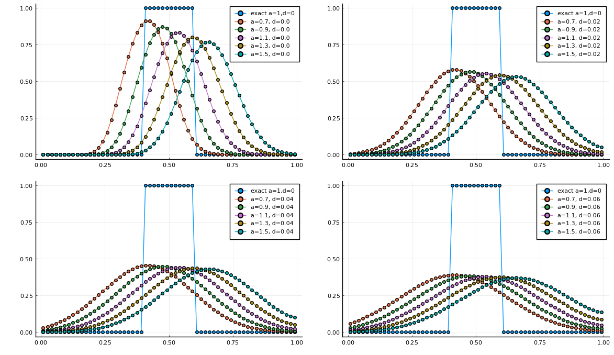

Indexed variables
The Julia script: example-addiff1d-indexed.jl
When solving a large number of equations with the same form, but different values, this feature greatly simplifies the input process and generated code. It also presents the possibility of arranging the assembly loops in different ways. The example shown here may not be the most meaningful case, but is easy to understand. It is an advection diffusion equation with a range of advection speeds and diffusion rates. It is solved using the finite volume method with upwinding for the advective flux. Since the equations are the same for each set of values, the variables are indexed in a single expression.
Begin by importing and using the Finch module. Then initialize. The name here is only used when generating code files.
using Finch
initFinch("FVadvection2d");Then set up the configuration. This example sets dimensionality of the domain and the solver type(FV).
domain(2) # dimension
solverType(FV) # FV for finite volume
timeStepper(RK4)# time stepperUse the built-in simple mesh generator to make the mesh and set up all node mappings.
n = 60 # number of elements in each direction
mesh(LINEMESH, elsperdim=n, bids=2)Before defining any variables, set up the indices using the index() command. At the same time, it will be convenient to build corresponding arrays of expressions for initial and boundary conditions. This has been omitted here for clarity.
nspeeds = 5 # number of different advection speeds
ndiffs = 4 # number of diffusion rates
speed = index("speed", range = [1,nspeeds])
diff = index("diff", range = [1,ndiffs])Define the variable and coefficient symbols using the type keyword VARARRAY and the previously defined index objects. The indexed coefficients will also need the type VARARRAY.
u = variable("u", VAR_ARRAY, CELL, index = [speed, diff])
coefficient("a", speeds, VAR_ARRAY) # advection velocity
coefficient("d", diffs, VAR_ARRAY) # diffusion rateThe PDE must be in a conservation form for finite volume. Note the [speed, diff] indices on u and the respective indices on a and d.
# The conservation type equation
conservationForm(u, "surface(upwind(a[speed],u[speed, diff]) - d[diff] * dot(grad(u[speed, diff]),normal()))")The assembly code is generated by nesting the elemental and indexed loops in the desired order. The outermost loop is first.
assemblyLoops(["elements", speed, diff])
solve(u);End things with finalizeFinch() to finish up any generated files and the log.